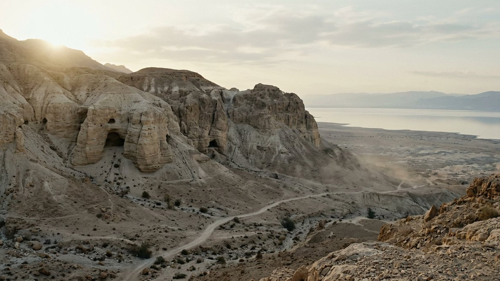
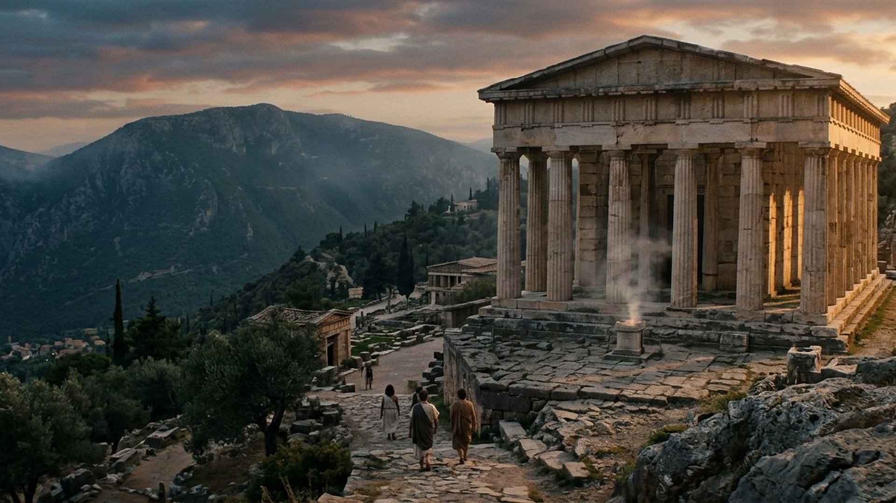

1. Annoncée longtemps avant
Pas une devinette de la veille : des décennies, souvent des siècles d'écart — datables par les manuscrits.

Salle 01 — La méthode
« Comment connaîtrons-nous la parole que Jéhovah n'a pas dite ? Quand le prophète parlera au nom de Jéhovah et que la chose n'arrivera pas, c'est une parole que Jéhovah n'a pas dite. » — Deutéronome 18:21, 22 (d'après Crampon 1904)
Reconstitution numérique — les grottes de Qumrân, où dormaient les plus anciens manuscrits bibliques.
Avant les miracles d'érudition, la Bible donne son propre mode d'emploi (Deutéronome 18:21, 22 ; Isaïe 41:21-23). Une vraie prophétie coche toutes les cases :
Pas une devinette de la veille : des décennies, souvent des siècles d'écart — datables par les manuscrits.
Des noms, des lieux, des enchaînements. Le vague « quelque chose va changer » ne compte pas.
Aucune extrapolation des tendances du moment ne permettait de la formuler.
« La chose arrivera » : le critère biblique est binaire. Un détail faux, et la prophétie tombe.
Archéologie, chroniques antiques, géographie actuelle : le visiteur peut contrôler chaque affirmation.
Appliquons la grille aux deux candidats les plus célèbres de l'Antiquité.
Candidat A — DONNÉE HISTORIQUE

Reconstitution numérique — un sanctuaire oraculaire grec au crépuscule.
Vers 550 av. n. è., Crésus, roi de Lydie, demande s'il doit attaquer la Perse. Réponse rapportée par Hérodote (Histoires, I.53) : s'il franchit le fleuve Halys, il « détruira un grand empire ». Il attaque, est vaincu… et détruit le sien. L'oracle avait toujours raison — dans les deux sens.
Candidat B — LECTURE PROPHÉTIQUE
« Je dis de Cyrus : Il est mon berger, et il accomplira toute ma volonté. » — Isaïe 44:28 (d'après Crampon 1904)
Le même livre annonce le nom du conquérant de Babylone, la chute de la ville et le retour des exilés (Isaïe 44:27 à 45:2) — événements de 539 av. n. è., environ deux siècles plus tard. Aucune ambiguïté possible : si le conquérant s'était appelé autrement, la prophétie était fausse.
Faites glisser le curseur : à gauche, les grottes de Qumrân ; à droite, le type de rouleau qu'on y a retrouvé en 1947.
Reconstitutions numériques — écriture du rouleau volontairement illisible : ce n'est pas une photographie du manuscrit.
FAIT ARCHÉOLOGIQUE
54 colonnes, les 66 chapitres d'Isaïe, 7,34 m de parchemin. Trouvé en 1947 dans la grotte 1 de Qumrân ; daté d'environ 125 à 100 av. n. è. par la paléographie, avec l'appui du radiocarbone. Le chapitre 45 — celui qui nomme Cyrus — s'y lit donc sur un manuscrit antérieur à Jésus, copié des siècles après Isaïe mais bien avant toute « relecture » chrétienne possible.
Musée d'Israël, Jérusalem (Sanctuaire du Livre), n° HU 95.57/27 — fiche officielle du musée. Les fragments de Daniel retrouvés à Qumrân attestent la même ancienneté de transmission pour le livre de Daniel.
La paléographie compare les formes de lettres à des textes datés ; le carbone 14 mesure la désintégration du carbone dans le parchemin (avec une marge) ; depuis 2025, une troisième voie existe : un modèle d'intelligence artificielle nommé Enoch, entraîné sur des manuscrits déjà datés au carbone 14, qui estime l'âge des autres à partir de micro-traces d'encre. Ses résultats, publiés en 2025, ont été jugés « réalistes » par des experts pour environ 79 % des manuscrits testés. Comparez :
LECTURE PRUDENTE Enoch ne « prouve » pas à lui seul une date de rédaction : il date des copies, avec des fourchettes, et ses conclusions sont discutées. Mais son travail déplace le débat : plusieurs copies, dont celle de Daniel, ressortent plus anciennes que la paléographie classique ne le pensait — parfois contemporaines de l'époque de composition présumée des livres. C'est exactement le genre de résultat qui complique l'objection « écrit après les faits » (voir plus bas).
DÉBATTU — le débat de 2026 Le dossier a mûri, et cette salle le suit des deux côtés. En 2026, le paléographe Christopher Rollston (université George-Washington) a jugé certaines fourchettes d'Enoch trop hautes au regard du contenu : 4Q114 contient Daniel 8 à 11, des chapitres liés par la plupart des spécialistes à la crise d'Antiochos IV (IIᵉ siècle) — une copie ne peut guère être très antérieure à ce qu'elle raconte, si l'on suit cette lecture. Sa règle de méthode tient en une phrase : Enoch ne doit jamais être le seul outil dans la boîte. D'autres spécialistes soulignent en sens inverse les convergences entre Enoch, le carbone 14 et l'ancienne paléographie pour des copies comme 4Q52 (Samuel) ou 4Q70 (Jérémie), dès le IIIᵉ siècle. Et le travail continue : depuis 2026, un grand projet financé par l'Union européenne reprend la question des origines des manuscrits. Verdict de la salle, inchangé mais mieux informé : Enoch resserre le débat sur les copies ; il ne tranche pas, à lui seul, la date de rédaction — et c'est exactement pour cela qu'il figure ici en pièce débattue, pas en preuve vedette.
Prouver qu'un événement a été annoncé ne signifie pas que chaque vie est écrite d'avance. La Bible présente un Dieu qui choisit ce qu'il prévoit et ce qu'il annonce pour accomplir son dessein, tout en laissant à chacun le choix de sa voie : « J'ai mis devant toi la vie et la mort (…) Choisis la vie » (Deutéronome 30:19). La précision des prophéties de ce musée porte sur ce que Jéhovah a résolu d'accomplir — jamais sur un destin imposé à chaque humain.
Comment reconnaître une vraie prophétie ? La Bible elle-même donne le critère : si la parole annoncée ne s'accomplit pas, elle ne venait pas de Jéhovah. De ce principe simple, ce musée tire cinq exigences : une annonce faite longtemps à l'avance, précise, impossible à deviner, accomplie dans ses détails, et vérifiable par l'histoire. Comparez l'oracle de Delphes, qui promettait à Crésus qu'il détruirait un grand empire — le sien ou celui de l'ennemi, selon l'issue — avec le livre d'Isaïe, qui nomme Cyrus environ deux siècles avant sa naissance. Et surtout, le texte existait avant les faits : le Grand rouleau d'Isaïe, retrouvé à Qumrân, date d'environ un siècle avant Jésus. Il contient déjà, noir sur parchemin, le nom du conquérant de Babylone. Entrez maintenant dans la salle 02 : Babylone vous attend. Une annonce vague ne risque jamais d'être démentie. Au contraire, une annonce qui donne un nom, une ville et un enchaînement précis accepte d'être jugée par les faits. Retenez également ceci tout au long de votre visite : annoncer n'est pas contraindre. Chacun reste libre de ses choix. La galerie suivante vous conduit à Babylone.
C'est précisément pour trancher cette objection que cette salle commence par les manuscrits. Le Grand rouleau d'Isaïe date d'environ 125 à 100 av. n. è. : il prouve que le texte d'Isaïe circulait, déjà fixé, avant l'ère chrétienne. Pour Cyrus, l'écart décisif est ailleurs : entre la rédaction d'Isaïe — sous domination assyrienne, quand Babylone n'était pas encore l'empire à abattre — et la prise de Babylone en 539, il s'écoule environ deux siècles, documentés dans la salle suivante. Écrire « après coup » aurait exigé de placer le nom de Cyrus dans un livre que tout un peuple conservait déjà.